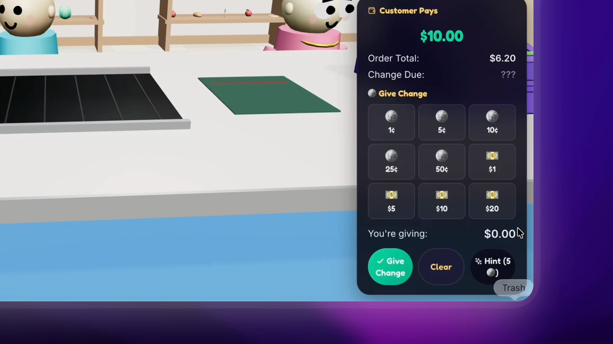
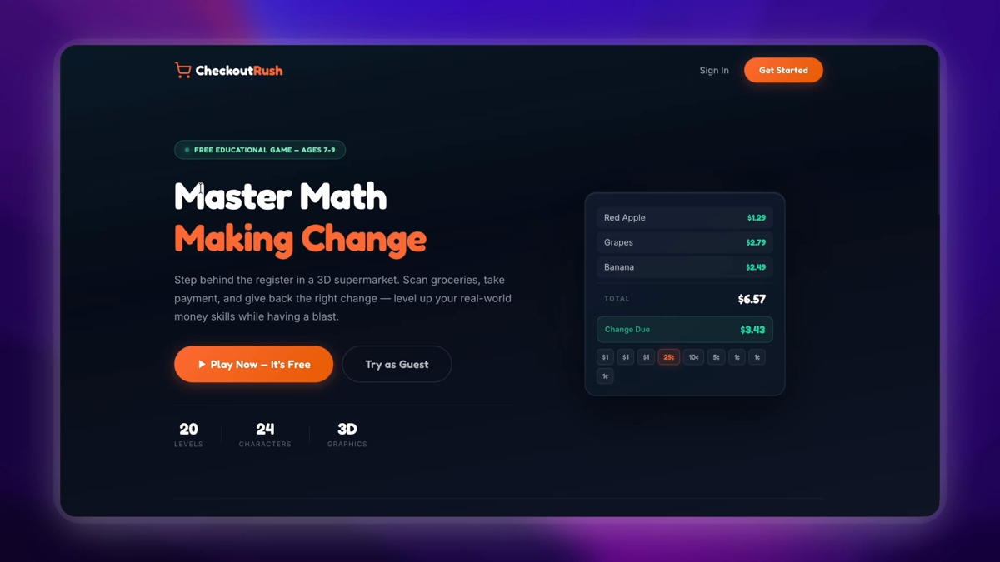
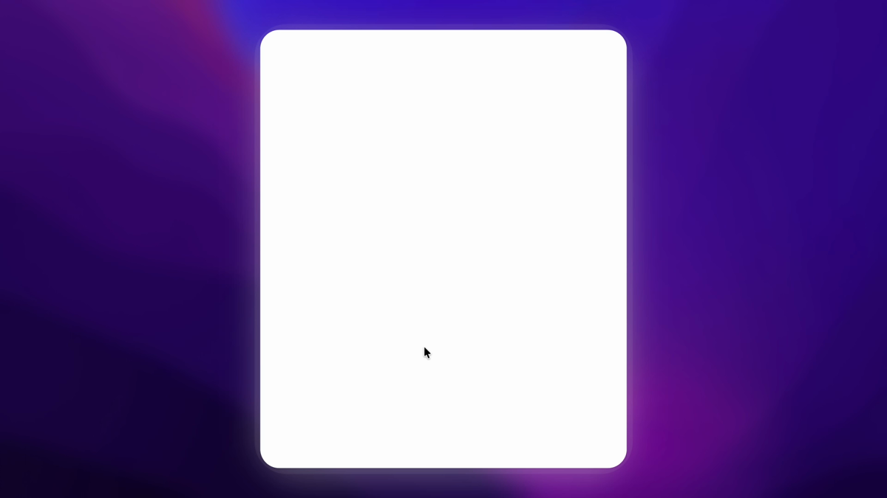
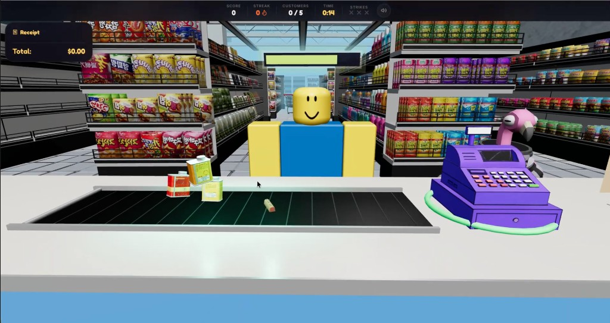

Overview
Checkout Rush is a browser-based educational game for ages 7–9 that turns money math into a cashier role-play. Players scan items, read totals, accept payment, and return change—while a timer and customer queue create just enough pressure to feel like a game, not a worksheet.
This case study walks from the tutoring problem that sparked the idea through architecture, testing, and the passes that tightened rewards, the shop, first-time onboarding, and a later visual and UI upgrade to the live experience.
The problem
Elementary students often learn money faster when they can manipulate representations of bills and coins—but classroom practice frequently splinters into isolated drills. A student might succeed on “quarters make a dollar” and still stall when asked to chain add items → read total → accept payment → make change in order. That gap between procedural pieces and situated use is exactly what national and international assessments keep measuring in different language: not just whether a student can compute, but whether they can deploy math in realistic contexts.
Large-scale data back up the stakes. On the U.S. NAEP mathematics assessment (grade 4, 2022), average scores were down from 2019, and the share of students at or above the “Proficient” level fell—trend lines that get sharper when the task isn’t a single number sentence but a multi-step, context-heavy problem.1 Internationally, PISA defines mathematical literacy as using mathematics in real settings—including “personal, occupational, and societal” contexts—rather than decontextualized symbol manipulation alone.2 U.S. policy guidance likewise treats K–12 financial education as a cumulative build: concepts introduced early, reinforced over time, with families and educators as partners—because money skills are rarely learned from one worksheet.3 Professional teaching guidance also stresses representation, sense-making, and fluency with understanding over isolated procedures—roughly the bar I was aiming for in the HUD, not a worksheet with a new skin.4
That research framing matches what I saw locally: at the Westlake Public Library, 2nd–4th graders often had the pieces but not the choreography of a transaction. I wanted a repeatable, low-stakes space to rehearse the full loop with immediate feedback—without requiring an install, because if access is hard, practice won’t happen on a school Chromebook.
Sources (problem framing)
- National Center for Education Statistics, NAEP Mathematics: Highlighted results for the nation (grades 4 & 8), 2022 — national trends and achievement levels. nationsreportcard.gov/highlights/mathematics/2022
- OECD, PISA 2022 Mathematics Framework (mathematical literacy, use of mathematics in “authentic contexts”). pisa2022-maths.oecd.org
- Consumer Financial Protection Bureau, Advancing K–12 financial education: A guide for policymakers — evidence for early, consistent exposure and system-level support. consumerfinance.gov (K–12 guide)
- National Council of Teachers of Mathematics, Principles to Actions: Ensuring mathematical success for all (2014) — productive struggle, representation, and procedural fluency with understanding (positioning for classroom-adjacent practice). nctm.org/principlestoactions
Citations are for framing only; I did not conduct a district-level study. My claim about tutoring cohort behavior remains in the callout below—local, informal observation.
Research & framing
I didn’t run a formal study—I combined library observation, short interviews with parents, and a lightweight competitive scan of free browser math games. Three patterns kept showing up:
- Worksheets disguised as games often keep math abstract; the “game” is a skin, not a mechanic.
- Many titles avoid coins or collapse everything into a single “pay” button, which skips the skill I cared about.
- Kids tolerate timers when the framing is fair and the controls are obvious—when the timer feels like a rule of the job, not a punishment.
I wrote a one-page product brief: who it’s for, what “better” looks like in one session, and what I would not try to solve (full curriculum coverage, account-based classroom analytics—that’s a later build).
Audience, personas, goals
Composite persona: “Jordan,” 8. Comfortable with single-step money questions, easily distracted by busy visuals, motivated by short wins and visible streaks. Plays games on the web at home; school device is a managed Chromebook.
Goals
- Increase fluency making change with mixed coins and bills up to $50.
- Keep cognitive load in the math, not the interface.
- Make failure informative: wrong change should teach, not shame.
Non-goals (v1)
- Multiplayer, accounts for every student, or teacher dashboards.
- Photoreal graphics—clarity beats spectacle on integrated graphics chips.
Solution
Checkout Rush places the learner behind the register. The 3D scene provides spatial context; the HUD carries the learning. Difficulty scales across bands so the same core interaction can ramp from friendlier totals to harder mixed-coin challenges.
Audio and UI feedback answer three questions instantly: What do I do next? Was I right? How do I recover? If any of those are fuzzy, the educational layer collapses—kids assume they’re “bad at math” instead of “bad at UI.”

Core interaction loop
Build the basket total from priced items.
Confirm the amount due before taking payment.
Watch what the customer hands over.
Select coins and bills to return; submit when confident.
Each loop ends with scoring, streak updates, and a new customer—so the skill repeats without feeling like the same screen copy-pasted.


Before & after
The live game is the v2 experience, but the design story is a delta: earlier HUDs carried the same math with less room for error copy and environmental read. The slider compares the pay / change moment (earlier in-game still vs. the expanded v2 surface). The stills below show the same aisle idea with the graybox-to-stylized store pass.


Design process
How the idea evolved
- Weeks 1–2 — Paper + spreadsheet I mocked rounds as rows: item prices, expected totals, allowed denominations. If I couldn’t explain a round on paper, it didn’t go into the build.
- Weeks 3–5 — Interaction shell Built the HUD and money logic with initial art. If the numbers weren’t honest, 3D wouldn’t save it.
- Weeks 6–8 — Three.js scene Added environment, lighting, and item highlighting. Performance-first: aggressive instancing, conservative textures.
- Weeks 9–10 — Playtests Ran timed sessions; tracked confusion points on a simple rubric (orientation, calculation, control).
- Weeks 11–12 — Ship + harden GitHub Pages deploy, bug bash, then the post-launch polish pass on rewards and shop systems.
Information architecture
- Title → difficulty → round loop
- HUD layer (persistent)
- Shop / meta layer (unlocks)
- Settings (audio, later accessibility)
System architecture
A deliberately boring stack: static hosting, client-side game loop, optional cloud persistence. No custom servers to babysit during a semester-long class project.
┌──────────────────────────────────────────────────────────┐
│ Browser (GitHub Pages) │
│ ┌────────────┐ ┌─────────────┐ ┌──────────────────┐ │
│ │ index.html │ → │ main.js │ ↔ │ Three.js scene │ │
│ │ styles │ │ game logic │ │ meshes / lights │ │
│ └────────────┘ │ HUD / shop │ └──────────────────┘ │
│ └──────┬──────┘ │
│ │ Web Audio (SFX + feedback) │
│ ▼ │
│ ┌──────────────┐ │
│ │ Firebase │ progress / shop │
│ │ (optional) │ persistence │
│ └──────────────┘ │
└──────────────────────────────────────────────────────────┘
Tech stack & rationale
| Layer | Choice | Why |
|---|---|---|
| Runtime | HTML / CSS / ES modules | Zero build step for classmates and teachers to open a link. |
| 3D | Three.js | Mature community, examples for materials, easy to profile in DevTools. |
| State | Vanilla JS modules | Transparent data flow while debugging kid-reported issues. |
| Data | Firebase / Firestore | Lightweight persistence for cosmetics and future leaderboards. |
| Audio | Web Audio API | Low-latency feedback beats playing long MP3 stingers. |
| Ship | GitHub Pages | Same workflow as the rest of my coursework repos. |
Key engineering decisions
| Decision | Alternative | Outcome |
|---|---|---|
| Difficulty bands | Single linear level list | Cleaner mapping between math skills and content batches. |
| HUD-first layout | Diegetic-only UI | Faster tutoring—kids found numbers quickly in testing. |
| Static hosting | Node backend | Less ops risk; aligns with “open and play” goal. |
Hardest integration challenge: keeping one authoritative transaction state across pointer events, 3D raycasts, and audio cues. My approach was small, pure functions for money math, a single “round controller,” and loud assertions in development builds when state drifted.
Testing, rubrics, iteration
I ran 24+ supervised sessions across family friends, library contacts, and coding-club peers. Sessions were 8–14 minutes, usually three back-to-back rounds with a 60-second debrief.
Each session scored (0–2) on three axes: orientation (did they know the next action?), accuracy (correct change), recovery (after a mistake, could they self-correct?). Those numbers are rough—but directionally they showed where the UI failed before the math did.
Signal
Engagement spiked when the cashier fantasy felt coherent: sound + score + “next customer” read as one system.
Friction
Early builds hid the “scan items” step; first-time players stared at the empty counter. That’s what drove the glowing item cue and first-round prompt.
“Wait, this is math? I thought we were just playing the store game.” — Elementary playtester (grades 2–4 cohort)
Post-launch polish (evaluation pass)
After release, I audited reward fairness and shop systems—kids shouldn’t feel rewarded for wrong math. Highlights:
- Coin economy tied to correctness — wrong change grants zero coins; streaks still reward genuine improvement.
- Cash drawer respects level config —
moneyOptionsfilters what appears so players aren’t handed denominations they haven’t earned. - Shop items activate — consumables on purchase; wallpapers selectable; Firestore stores
activeWallpaper. - Onboarding — “Click items to scan” on round one; pulsing highlight on unscanned products.
- Cosmetics persist — golden scanner / wallpaper survive menu navigation.
| Phase | Focus | What moved |
|---|---|---|
| Alpha | Math fidelity | Edge cases on quarters + nickels; rounding rules |
| Beta | Readability | HUD contrast, font sizes on 1366×768 |
| RC | Performance | Texture sizes, draw call budget |
| 1.0 | Ship | GitHub Pages + smoke tests on Chromebook |
| 1.1 | Fairness + shop | Coin rules, consumables, wallpaper persistence |
| 2.0 | Visual & UI pass | Denser store, character polish, expanded transaction HUD, strikes + hints |
Visual & interaction upgrade (v2)
The before & after block above is the high-level diff; the stills and notes here unpack what moved in the v2 pass. After the first public build and the fairness/shop pass, I pushed a second major refresh focused on readability, character presence, and end-to-end transaction UI. The goal was for the store to read as a complete space—not a graybox—and for every step of the money loop to have a clear, readable surface on 1366×768 school laptops.
The scene now leans into a bright, stylized 3D look (shelves read at a glance, counter materials pop), while the HUD tracks score, streak, customers, a yellow countdown timer, strikes, and audio in one top bar. A floating receipt anchors the math: line items, running total, and color emphasis where it matters. On the belt, a neon grid and clearer product reads make “what to scan” obvious without extra text.
On the interaction side, the Customer pays / give change panel is fully surfaced: a coin-and-bill grid, change due vs. what the customer paid, Give change and Clear, plus a hint costed in coins. When the math is off, a pill-shaped “Oops” message spells the expected change so failure stays instructive, not punishing. Follow-up playtests: same rubric, but players spent less time hunting controls and more time on the actual arithmetic—exactly the tradeoff I was aiming for.

Outcomes & metrics
Sample sizes are small—this is a student project, not a district pilot. Treat headline numbers as directional.
The metric I cared about most was qualitative: students narrated the job (“I’m the cashier”) instead of narrating the worksheet (“I picked B”). That’s the behavioral signal I wanted—because it predicts willingness to repeat practice.
“If it feels fair, they’ll try again. If it feels random, they blame themselves and quit.”
— Note from my post-session journal (week 9)Accessibility & inclusion
- Large touch targets on coin and bill buttons; spacing tuned on 11″ Chromebooks.
- Color is not the only signal — icons + text on key HUD labels.
- Motion — item pulse can be reduced in a future setting; I avoided camera shake for error states.
- Audio — distinct SFX for success vs. mistake so color-blind players still get feedback.
Risks & mitigations
Integrated graphics
Kept textures small, limited overdraw, tested on a 6-year-old laptop borrowed from a friend’s family.
Classroom Wi‑Fi
Game playable offline once loaded; Firebase features degrade gracefully when blocked by school filters.
“Educational game” skepticism
Documented learning intent, rubric, and iteration here so reviewers see process—not just a trailer.
Scope creep
Cut multiplayer, accounts, and teacher dashboards for v1. Roadmapped instead of half-shipped.
Roadmap
- Teacher snapshot — printable summary: levels played, accuracy trend, time on task.
- Assist mode — optional number line for change-making without removing the core task.
- More store layouts — same math, different visual noise to test transfer.
- Localization hook — separate copy from layout for future languages.
Gameplay video
Full capture of a live session—menus, rounds, HUD, and shop touchpoints. The poster frame is from the v2 transaction UI; newer stills in the visual upgrade section match this build.
Download gameplay video (.mp4)
Reflection
Technical: I got faster at the unglamorous work—state machines, profiling, and writing errors kids can act on. Three.js is powerful, but the HUD still carried the learning.
Product: The best compliment wasn’t “cool graphics”—it was kids negotiating turns to play again. That’s the loop working.
Next: more diverse playtesters (including students who find money math actively discouraging), then ship a teacher-facing summary page. If the data holds, I’ll pitch a local classroom pilot.
Try it yourself
Play the build, read the source, and if you’re evaluating this portfolio: the artifacts on this page map to folders and commits in the repo.